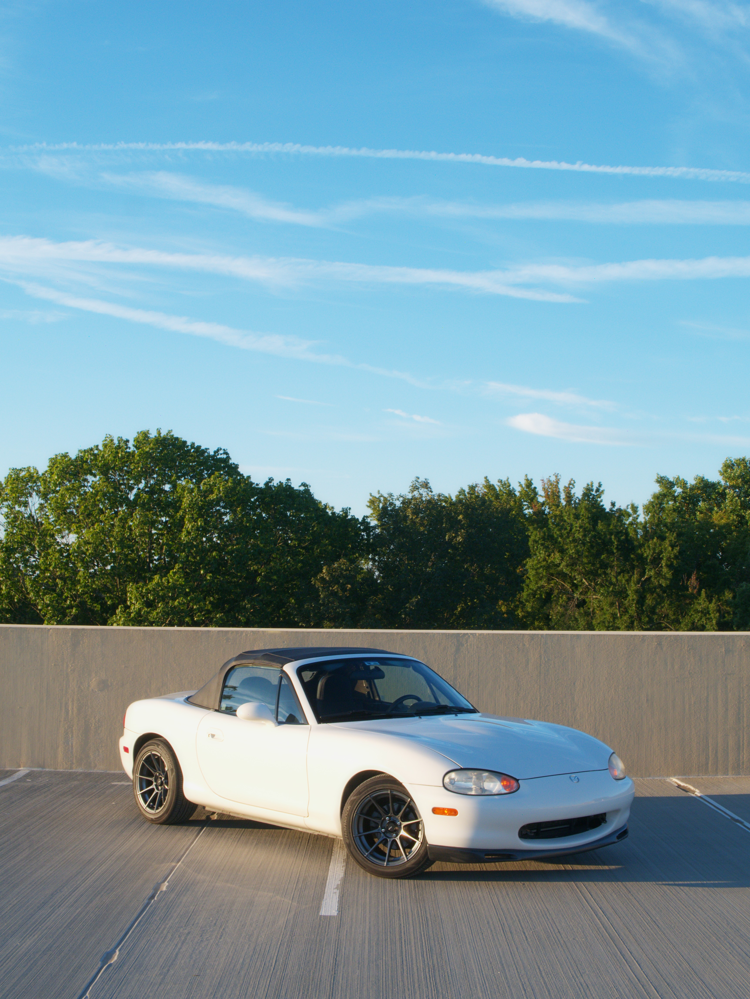
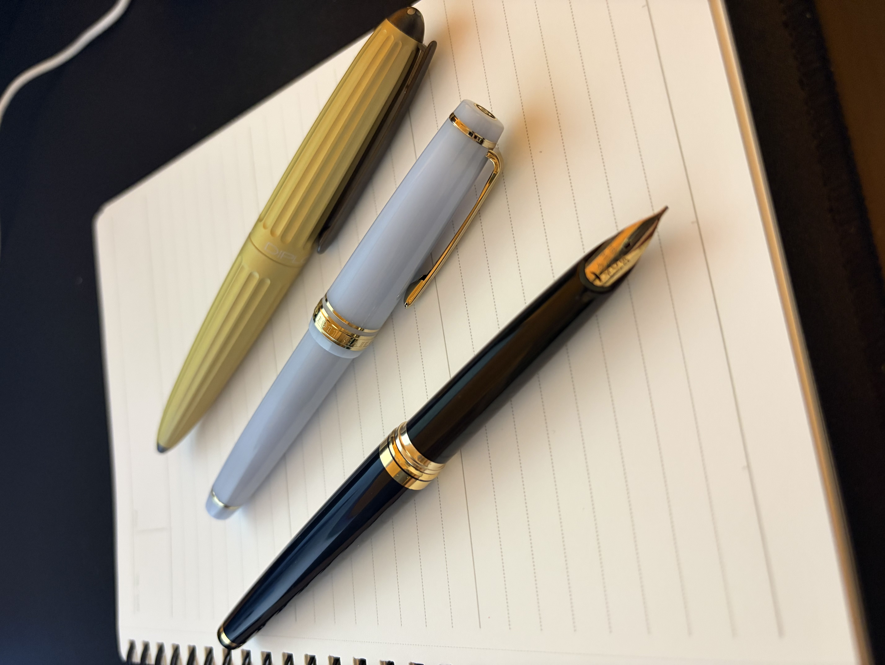

About Me
I am a Computer Science major with a Finance minor at High Point University. I chose computer science because I enjoy problem-solving and building things from the ground up, whether that’s writing code, designing systems, or exploring new technologies. Pairing it with finance helps me to understand how technology intersects with business and the economy.
Outside of academics, I spend my time on a variety of hobbies that keep me engaged and creative. I enjoy working on cars and motorcycles, playing guitar and piano, photography, and collecting and restoring fountain pens. I’m also passionate about espresso and coffee, which has become a fun craft that blends precision and patience. These activities allow me to explore both technical and artistic skills while providing a fun balance to my studies.
My interests in finance and computer science often overlap, especially when it comes to investing and financial literacy. I have been investing since I was 13 years old and know that understanding how money works is essential to long-term financial success. I enjoy coding projects that analyze data, track markets, or model financial scenarios, combining my technical skills with my knowledge of finance.
Hobbies & Interests

